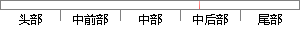

当定义好任务控制块的所有变量后，需要把空任务块连接成空任务块控制链表，主要代码如下图所示。
片段位置图

相似结果
相似片段：化,主要的任务就是 一.将系统定义的全局变量该清零...初始化任务控制块链表 for i 0 i OS_LOWEST_PRIO...任务代码的指针,pdata 是当任务开始执行时传递给任务...
| 标题 | 《uC-OS II学习 - 教育 - 道客巴巴》 |
| 对比库 | PaperRater云论文库 |
| 网址 | http://www.doc88.com/p-612721918609.html |
| 相似率 | 64.52% （轻度抄袭） |
※ 片段修改建议 ※
近似词参考：- 主要：首要 重要
- 控制：节制
- 所有：全部
- 任务：使命 义务
- 定义：界说
系统自动生成语句： 当界说好使命节制块的全部变量后，需要把空使命块连接成空使命块节制链表，首要代码如下图所示。
注：本片段修改建议为系统自动生成，仅供参考。